CS184/284A Fall 2026 Homework 4 Write-Up
Link to webpage: cal-cs184-student.github.io/hw4-unforgiven-writeup
Link to GitHub repository: github.com/cal-cs184-student/hw4-unforgiven-writeup
Overview
Give a high-level overview of what you implemented in this homework. Think about what you've built as a whole. Share your thoughts on what interesting things you've learned from completing the homework.Part 1: Masses and springs
I implemented Cloth::buildGrid() to lay out a num_width_points x num_height_points grid of point masses, stored row-major (index = y * num_width_points + x). Points are spaced width/(num_width_points-1) and height/(num_height_points-1) apart. For a horizontal cloth the grid lies in the plane y = 1; for a vertical cloth it lies in the xy-plane with a small random z offset (within ±1/1000) so the cloth buckles in a consistent way instead of staying perfectly flat. Points listed in the scene's pinned array (as [x, y] indices) are marked pinned.
I then connected neighboring masses with three kinds of springs, each created once per pair of points (with bounds checks at the edges):
- Structural: each point to its left neighbor and the neighbor above it.
- Shearing: each point to its up-left and up-right diagonal neighbors.
- Bending: each point to the point two away to the left and two away above.
Rest lengths come from the initial positions. Below are wireframe views of scene/pinned2.json.
|
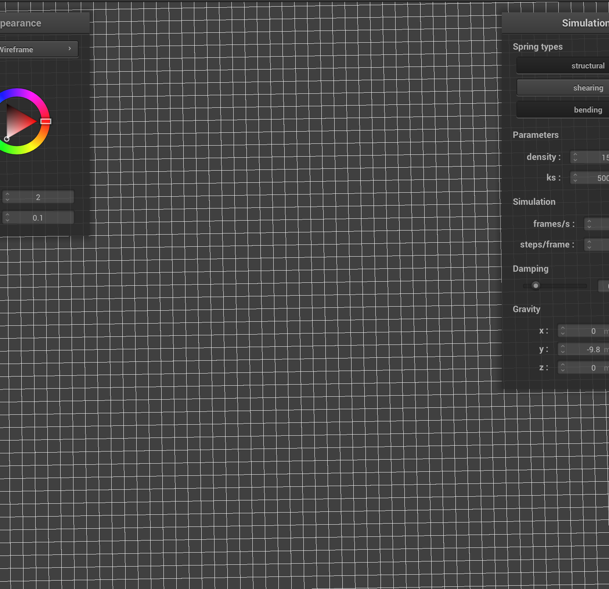 |
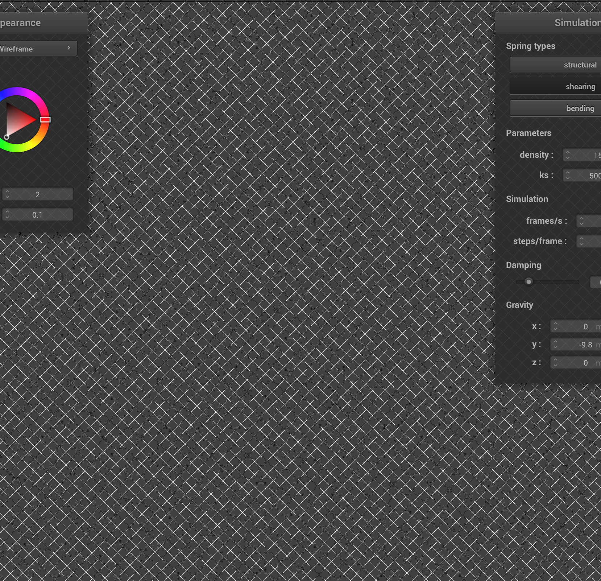 |
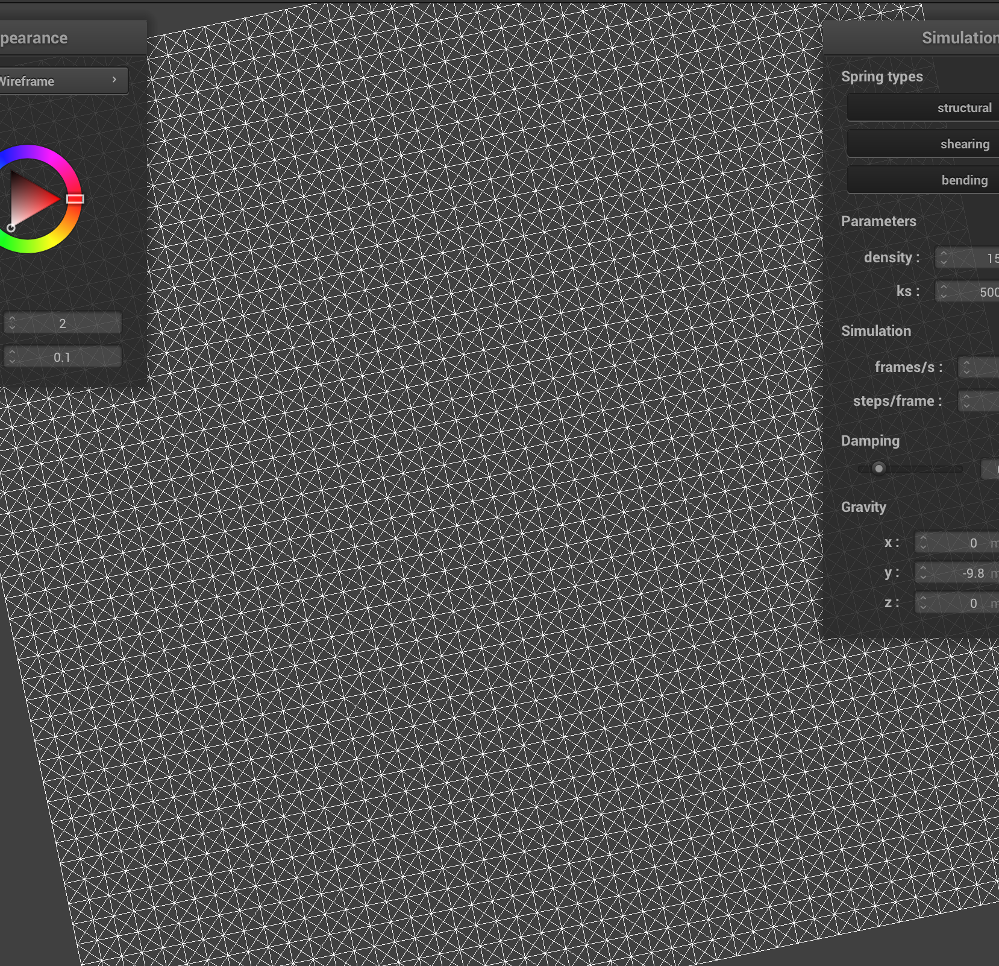 |
Part 2: Simulation via numerical integration
I implemented Cloth::simulate() in three stages each timestep (with mass = width · height · density / (num_width_points · num_height_points) and Δt = 1 / (frames_per_sec · simulation_steps)):
- Forces. Each point mass's force is reset to the external force (the sum of external accelerations times its mass, i.e. gravity). Then for every enabled spring type (structural / shearing / bending) I apply Hooke's law: \( F = k_s(\|p_b - p_a\| - \ell_0) \), directed along the spring, added to a and subtracted from b. Bending springs use \(0.2\,k_s\) since they should resist bending much less than stretching.
- Verlet integration. For every non-pinned mass, \( x_{t+\Delta t} = x_t + (1-d)(x_t - x_{t-\Delta t}) + \frac{F}{m}\Delta t^2 \), where \(d\) is the damping value (a fraction, 0.2 by default). Pinned masses never move.
- Position constraint [Provot 1995]. After integrating, any spring longer than 1.1 × its rest length is corrected by moving its endpoints back toward each other by the excess: half each, all of it on the free mass if the other is pinned, and nothing if both are pinned. This stops the cloth from becoming unstable with stiff springs / large steps.
Effect of the spring constant ks
(Defaults for pinned4.json: ks = 5000, density = 150, damping = 0.2; only one parameter was changed at a time.)
Low ks: the springs are weak relative to the cloth's weight, so the cloth stretches a lot under gravity and sags deeply between the pinned corners. It falls slowly-to-moderately, overshoots, and bounces/oscillates for a long time before settling at a visibly stretched, droopy rest shape. The 10% stretch constraint is what ultimately limits how much it can elongate. High ks: the cloth barely stretches and snaps back quickly, so it settles into a taut, shallow sag and reaches rest sooner with small high-frequency jitter at the start. With very high ks the system becomes stiff (the restoring force changes a lot within one Δt), which makes it less stable, and it relies more on the Provot constraint to avoid blowing up.
Effect of density
Density only scales the mass, and gravity force is \(m g\), so the springs must now hold up more weight. High density acts like lowering ks: the cloth is heavier relative to its springs, stretches more, and sags deeper (and rests lower). Low density makes the cloth light and "stiff"-looking: it hangs flatter and tighter between the pins, with less overshoot. (Acceleration from gravity is the same either way since \(a = g\); the difference is in how much spring force is needed to counter it.)
Effect of damping
Zero/low damping: energy is only lost to the stretch constraint, so the cloth keeps swinging and rippling for a long time and takes a very long time to reach rest. High damping: velocity is removed each step, so the cloth moves as if in thick fluid: it falls slowly, doesn't oscillate, and settles into a smooth rest shape quickly. At damping = 1 the velocity term vanishes entirely and the cloth creeps down in an overdamped way.
Final resting state of scene/pinned4.json
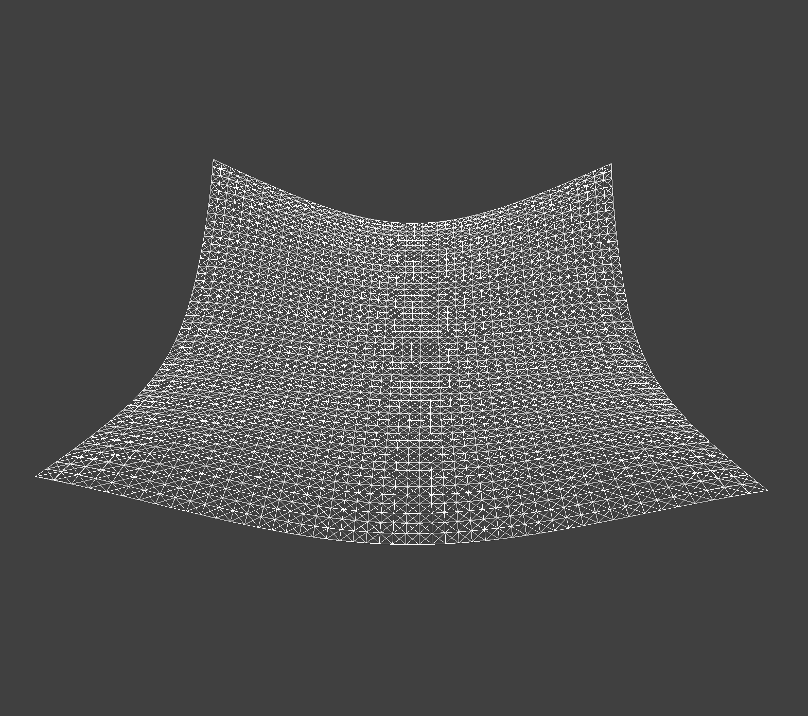
Part 3: Handling collisions with other objects
After the Verlet step in Cloth::simulate(), every point mass is tested against every CollisionObject by calling its collide(PointMass &). Both primitives use the same idea: if a point mass has ended up inside (or on the wrong side of) the surface, move it back onto the surface, and scale the correction by \((1 - f)\), where \(f\) is the object's friction. Concretely, the new position is \( x_{new} = x_{last} + (1-f)\,(p_{tangent} - x_{last}) \), where \(p_{tangent}\) is the "tangent point" on the surface and \(x_{last}\) is the mass's position at the previous time step. Since Verlet integration derives velocity from the last position, snapping to the surface also removes the inward velocity, and friction makes the mass lose some of its sliding motion.
Spheres. Let \(d = x - o\) be the vector from the sphere origin \(o\) to the point mass. If \(\|d\| < r\) the point is inside the sphere. The tangent point is where the ray from the origin through the point exits the sphere: \( p_{tangent} = o + r\,d/\|d\| \). I then apply the correction above (with a guard for the degenerate case \(d = 0\)).
Planes. For a plane with point \(p_0\) and unit normal \(n\), I compute the signed distance of both the current and the last position, \( s = (x - p_0)\cdot n \). If the signs differ (or the mass is exactly on the plane), the mass crossed the plane during this step. The tangent point is the current position projected onto the plane, \( x - s\,n \), pushed by a small SURFACE_OFFSET (0.0001) along the normal toward the side the mass came from, so the cloth rests just above the plane rather than exactly on it (which avoids z-fighting and re-crossing from numerical error). Using the last position to decide which side the mass came from means fast-moving masses can't tunnel through the plane. Then the same friction-scaled correction is applied.
Cloth resting on the sphere (scene/sphere.json) for different ks
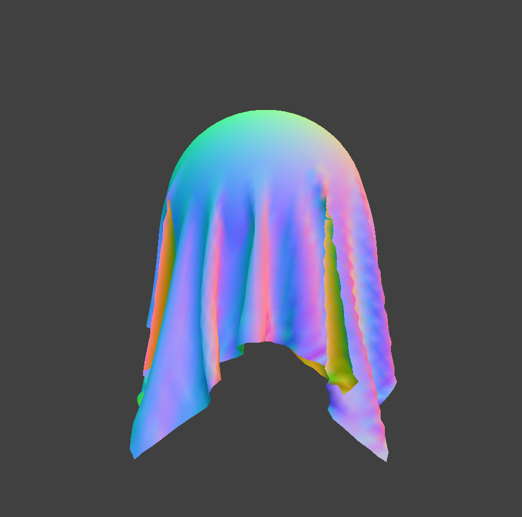 |
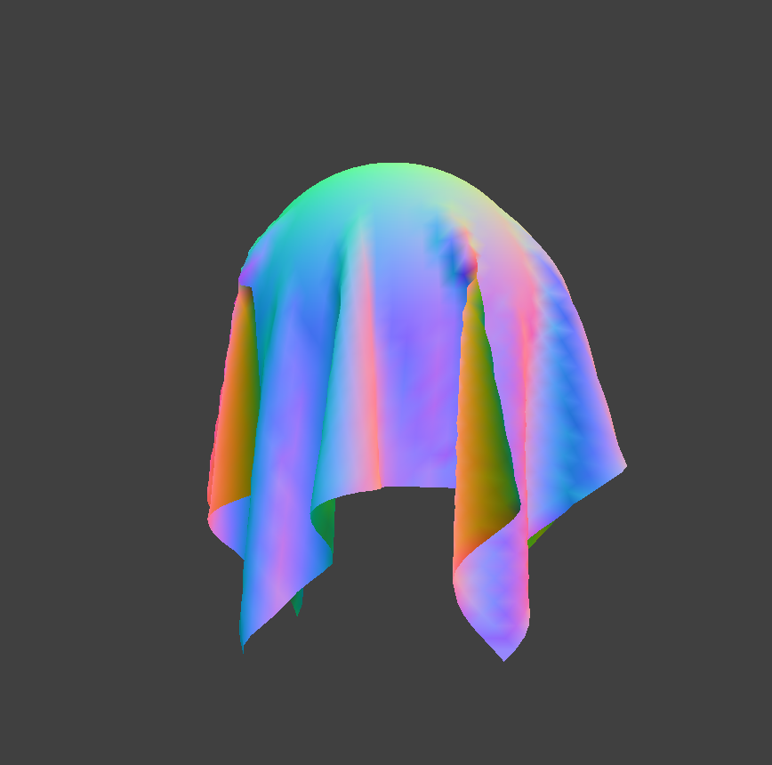 |
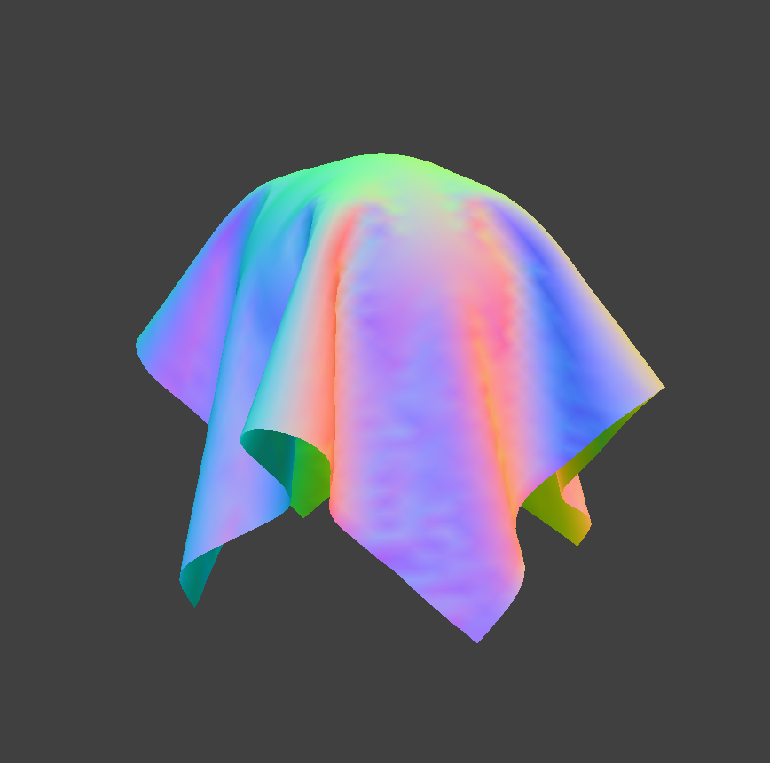 |
ks = 500: the springs are soft, so the cloth stretches under its own weight and hugs the sphere closely. It hangs the lowest and the sides fall nearly straight down in many narrow, tight folds, with a slightly jagged edge where the stretch constraint is doing the work. ks = 5000 (default): a middle ground; the cloth still drapes closely over the top but the folds are fewer and broader, and the hem hangs a bit higher. ks = 50000: the cloth is very stiff and barely stretches, so it is held out like a tent. It spreads wide, hangs noticeably shorter, and has only a few large, smooth folds, with the corners flaring outward instead of falling straight down. In short, higher ks gives a stiffer, smoother, more spread-out drape, and lower ks gives a heavier, more clinging drape with more small wrinkles.
Cloth at rest on the plane (scene/plane.json)

Part 4: Handling self-collisions
Checking every pair of point masses for overlap would be \(O(n^2)\), so I used spatial hashing. Each timestep, after Verlet integration, build_spatial_map() clears the map and puts every point mass into a bucket keyed by hash_position(). The hash partitions space into 3D boxes of size \(w \times h \times t\) with \(w = 3\,\text{width}/\text{num\_width\_points}\), \(h = 3\,\text{height}/\text{num\_height\_points}\), \(t = \max(w, h)\); a position is floored to integer box coordinates, which are combined into a single float key \(((x\cdot 41 + y)\cdot 41 + z)\). Different boxes can occasionally share a key, which is harmless because candidates are distance-checked.
self_collide() then looks only at the other point masses in the same bucket as pm. For each one closer than \(2\cdot\)thickness, it computes a correction vector pointing away from that mass with length \(2\cdot\text{thickness} - \text{dist}\), so the two end up exactly \(2\cdot\)thickness apart. The corrections are averaged over the colliding masses and divided by simulation_steps, then added to the position, so a mass isn't pushed too violently in a single step.
Cloth falling and folding on itself (scene/selfCollision.json, default density = 150, ks = 5000)
 |  |  |
(TODO: describe the sequence: the cloth falls flat onto the plane, first contacts itself where it crumples, layers pile up without passing through each other, and it eventually settles into a stack of folds.)
Varying density
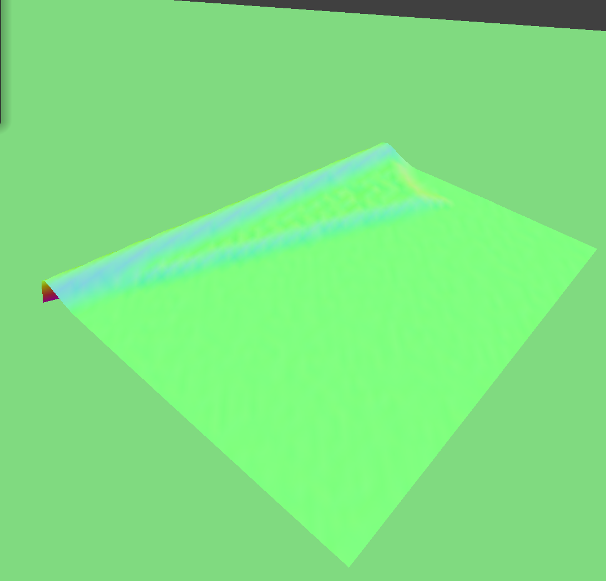 | 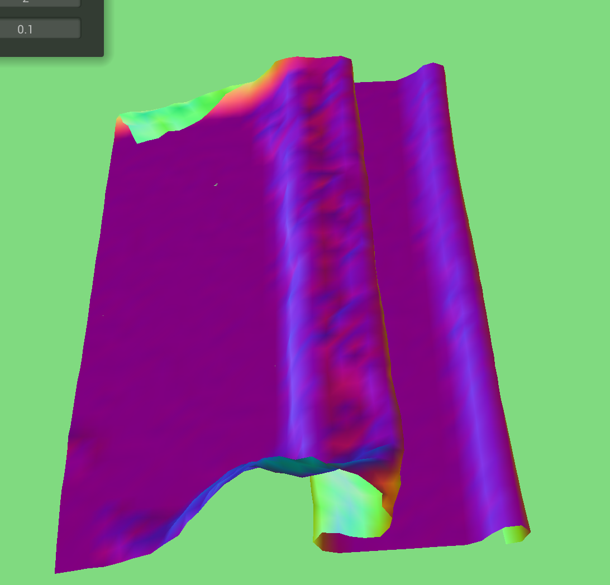 |
Both screenshots were taken at a similar point in the fall. Low density: the cloth is light, so the springs easily keep it spread out. It falls as an almost flat sheet and lands lying nearly flat on the plane, with only a small ripple along one edge, and it has barely started to fold on itself. High density: the cloth is heavy relative to what its springs can support, so it stretches and sags and the weight drives it to bunch up. It forms large, deep parallel folds that hang over and lie on top of the cloth beneath, with several layers stacked and the cloth clearly colliding with itself. In short, a heavier cloth collapses into bigger, more pronounced folds with more self-contact, and a lighter cloth stays flatter and smoother. (Density scales the mass, so gravity's pull relative to the spring force is what changes.)
Varying ks
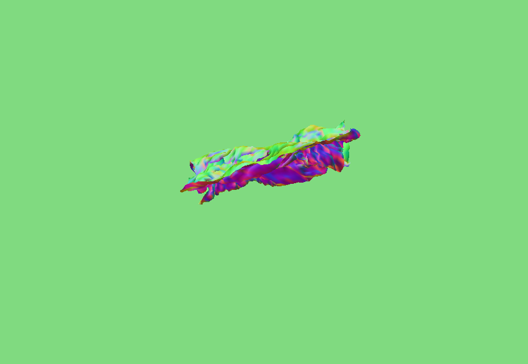 | 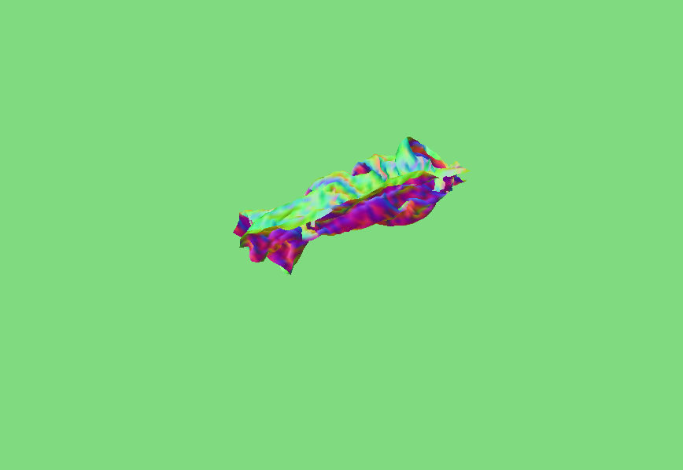 | 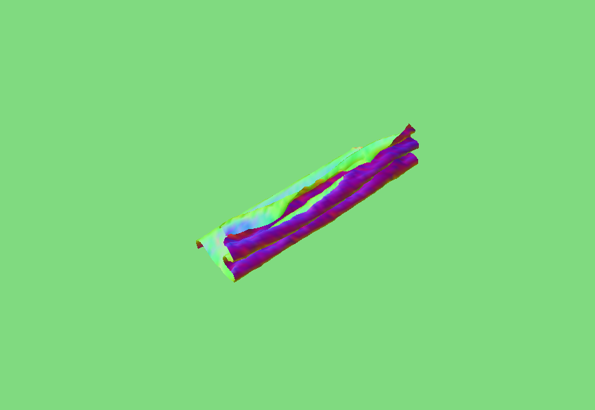 |
All three show the cloth near rest on the plane. ks = 50: the springs are very weak, so the cloth crumples into a thin, flat, heavily wrinkled pile of many tiny, chaotic folds that lie close together; it doesn't hold any large shape. ks = 500: the cloth holds together somewhat better, giving a slightly thicker pile with a mix of small wrinkles and a few larger folds that overlap one another. ks = 50000: the cloth is stiff, so instead of crumpling it rolls into a few long, smooth, parallel tube-like folds stacked on top of each other, with very few small wrinkles. In all cases the layers don't pass through each other, so self-collision is working; the difference is that higher ks produces fewer, larger and smoother folds, and lower ks produces many small ones.
Part 5: Shaders
What is a shader program?
A shader program is a small program that runs on the GPU, once for each vertex or each pixel, in parallel. It is made of (at least) two stages linked together. The vertex shader runs once per vertex: it takes the per-vertex inputs (position, normal, tangent, uv), transforms them (model matrix, then view-projection), and writes the clip-space position gl_Position for the rasterizer. It can also pass values on as "out" variables, such as the world-space position, normal and uv. The rasterizer then turns the triangles into fragments and interpolates those out variables across each triangle (like barycentric interpolation in the rasterizer project). The fragment shader runs once per fragment with those interpolated values as its "in" variables, plus uniforms like the light position, camera position and textures, and computes the final pixel color. Lighting and material effects come from this split: the vertex shader supplies the geometry and surface information at each point, and the fragment shader uses that to evaluate a lighting model (or look up a texture) per pixel. The vertex shader can also change geometry itself, as in displacement mapping.
Blinn-Phong shading
Blinn-Phong approximates the light reflected at a surface point as the sum of three terms, using the surface normal \(n\), the unit direction to the light \(l\), the unit direction to the camera \(v\), and the half vector \(h = (l+v)/\|l+v\|\):
\[ L = k_a I_a + k_d \frac{I}{r^2}\max(0, n\cdot l) + k_s \frac{I}{r^2}\max(0, n\cdot h)^p \]- Ambient (\(k_a I_a\)) is a constant that stands in for light bounced around the scene, so surfaces facing away from the light are not pure black. It doesn't depend on direction at all, so it looks flat.
- Diffuse models rough surfaces that scatter light equally in all directions. Brightness depends only on the angle between the normal and the light (Lambert's cosine law) and falls off with the squared distance \(r^2\) to the light. It doesn't depend on the viewer.
- Specular models the shiny highlight. It is strongest when the half vector is aligned with the normal, i.e. when the mirror reflection of the light points toward the camera. The exponent \(p\) controls how tight the highlight is (higher = smaller, sharper).
I used \(k_a = 0.1\), \(I_a = 1\), \(k_s = 0.6\), \(p = 64\), and the cloth's color as \(k_d\).
 |  |
 |  |
Texture mapping
The fragment shader just samples u_texture_1 at the interpolated uv coordinate and outputs that color. (TODO: describe your custom texture.)

Bump mapping and displacement mapping
Bump mapping (fragment shader) leaves the geometry alone and only perturbs the normal used for lighting. The height map \(h(u,v)\) is read from the texture, and the local-space normal is built from finite differences: \(dU = (h(u+1/w, v) - h(u,v))\cdot k_h k_n\), \(dV = (h(u, v+1/h) - h(u,v))\cdot k_h k_n\), and \(n_{local} = (-dU, -dV, 1)\), where \(w, h\) are the texture dimensions and \(k_h, k_n\) are the height and normal scalings. This is rotated to world space by the TBN matrix (tangent, bitangent = \(n\times t\), normal) and then used in Blinn-Phong. Displacement mapping (vertex shader) actually moves each vertex along its normal by \(h(u,v)\cdot k_h\), so the silhouette really changes; the fragment shader is plain Blinn-Phong.
 |  |  |
(TODO: state which texture you used for both.) Bump mapping only fakes the detail: the sphere's outline stays perfectly round and the bumps look like they are painted on, especially at grazing angles. Displacement mapping produces real bumps with a changed silhouette and self-occlusion, but the quality depends on how many vertices there are, since heights are only applied at vertices and the triangles between them are interpolated.
Sphere coarseness.
 |  |  |  |
(TODO: confirm against screenshots. Expected: bump mapping looks nearly the same at both resolutions, since it works per-pixel using the texture and only uses the vertex normals/tangents interpolated across triangles; at 16 the outline is visibly faceted. Displacement mapping depends heavily on the mesh: at 16x16 there are too few vertices to sample the height map, so the detail is blocky and coarse and doesn't resemble the texture; at 128x128 it captures much more of the texture detail and looks like real bumps.)
Mirror shader
For each fragment, I compute the view direction \(w_o\) from the surface point to the camera, reflect it about the normal, \(w_i = 2(n\cdot w_o)n - w_o\) (GLSL reflect(-wo, n)), and use \(w_i\) to look up the environment cube map. The surface therefore shows the part of the environment it would reflect.
 |  |
Custom shader
I wrote a toon (cel) shader with a rim light. The color comes from a gradient across the cloth's uv coordinates (pink to blue to yellow). The diffuse term \(\max(0, n\cdot l)\) is quantized into 4 bands with floor to get the flat cartoon look. The specular highlight is thresholded with step into a hard white spot, and a rim term \((1 - n\cdot v)^3\) is thresholded to add a light blue outline on edges that face away from the camera. The normal is flipped for back faces so the underside of the cloth is lit properly.